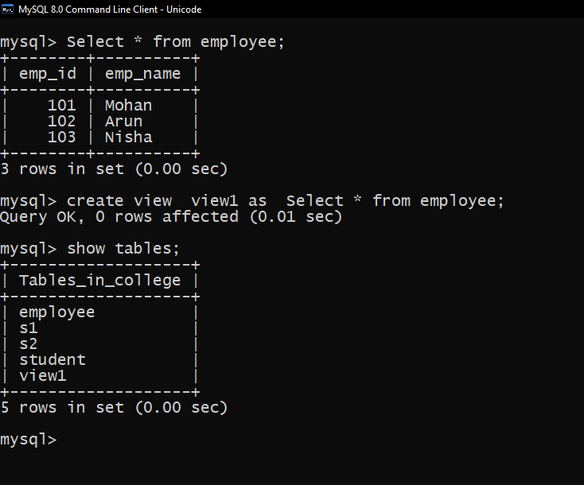

Create view
In SQL, a view is a virtual table based on the result-set of an SQL statement.
A view contains rows and columns, just like a real table. The fields in a view are fields from one or more real tables in the database.
You can add SQL statements and functions to a view and present the data as if the data were coming from one single table.
A view is created with the CREATE VIEW statement.
Syntax Of Create View
Mysql> CREATE VIEW view_name AS
SELECT column1, column2,
FROM table_name
WHERE condition;
Example of Create View
